Metadataschema's maken — Een gids voor data stewards
Met Contour ontwerp je aangepaste metadataschema's op een visuele manier — door formulierwidgets op een canvas te slepen of aan te klikken — en exporteer je ze als standaardconforme SHACL-vormen met DASH-formulierannotaties. De uitvoer past rechtstreeks in een FAIR Data Point of in elk SHACL-bewust platform.
De tagline van Contour: Visual schemas. Clean SHACL.
Deze gids is geschreven voor data stewards die willen vastleggen welke metadata hun gemeenschap moet (of mag) aanleveren voor een bepaald type bron — een dataset, een onderzoek, een monster, een softwarepakket — zonder met de hand Turtle te schrijven.
Geen installatie, geen server. De editor is één op zichzelf staande webpagina. Open hem in Chrome of Edge (aanbevolen, om bestanden rechtstreeks op te slaan) — Firefox en Safari werken ook, met een opslagmethode in downloadstijl.
Inhoudsopgave
- Wat je bouwt (kernbegrippen)
- De interface in een oogopslag
- Tutorial: bouw een Dataset-schema vanaf nul
- Stap 1 — Bepaal de identiteit van het schema
- Stap 2 — Beheer vocabulaires (prefixes)
- Stap 3 — Organiseer het formulier in groepen
- Stap 4 — Voeg je eerste eigenschap toe (een tekstveld)
- Stap 5 — Stel cardinaliteit en validatiebeperkingen in
- Stap 6 — Voeg een meerregelige beschrijving toe
- Stap 7 — Voeg een datum-eigenschap toe
- Stap 8 — Voeg een gecontroleerd vocabulaire toe (enumeratie)
- Stap 9 — Verwijs naar een andere entiteit (IRI + klasse)
- Stap 10 — Modelleer een subobject met een geneste vorm
- Stap 11 — Bekijk een voorbeeld van het invoerformulier
- Stap 12 — Bekijk de gegenereerde SHACL
- Stap 13 — Opslaan en exporteren
- Rechtstreeks met de code werken (het tabblad SHACL-code)
- Je werk controleren (het paneel Problemen)
- Geavanceerde functies (geavanceerd modelleren)
- Referentie
- Recepten — veelvoorkomende modelleerpatronen
- Tips en probleemoplossing
1. Wat je bouwt (kernbegrippen)
Een metadataschema is in dit gereedschap een SHACL NodeShape: een beschrijving van hoe een geldig record van een bepaald type eruitziet. Een paar begrippen die je overal zult tegenkomen:
| Begrip | Wat het voor jou betekent |
|---|---|
| NodeShape | Het schema zelf — bijv. "wat een Dataset-record moet bevatten". |
Doelklasse (sh:targetClass) |
Het RDF-type waarop het schema van toepassing is, bijv. dcat:Dataset. Records van dit type worden gevalideerd tegen jouw schema. |
Eigenschap (sh:property) |
Eén veld — titel, uitgever, uitgiftedatum, … Elke eigenschap heeft een pad, een widget en beperkingen. |
Eigenschapspad (sh:path) |
Het RDF-predicaat waarin het veld schrijft, bijv. dct:title. Dit is de term die daadwerkelijk in de metadata wordt opgeslagen. |
Widget (dash:editor) |
Het formulierelement dat wordt getoond aan degene die de metadata invult — een tekstvak, een datumkiezer, een vervolgkeuzelijst, enz. |
Groep (sh:PropertyGroup) |
Een visuele sectie die verwante velden bundelt, bijv. "Algemene informatie". |
Prefix (@prefix) |
Een korte alias voor een vocabulaire-namespace, bijv. dct: → http://purl.org/dc/terms/. |
Je ontwerpt dit allemaal visueel; het gereedschap schrijft de SHACL voor je.
2. De interface in een oogopslag
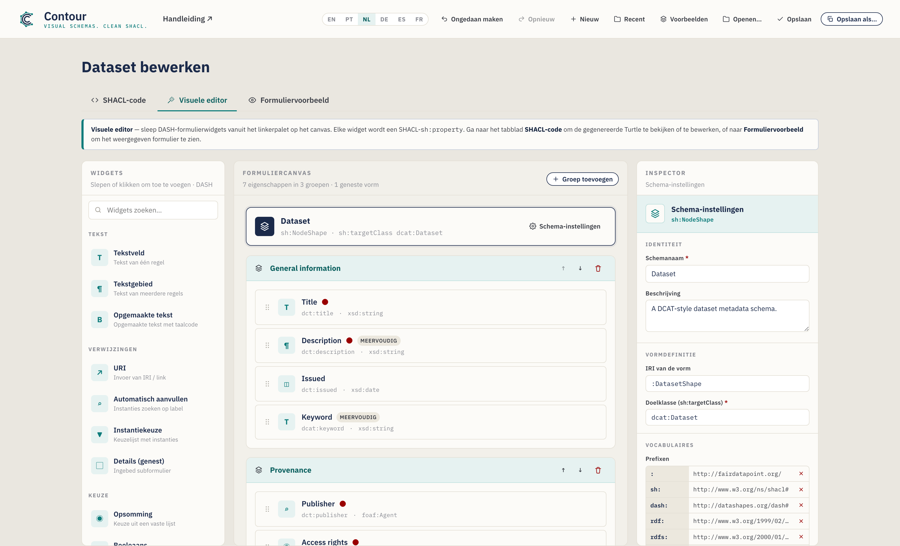
Het venster heeft drie tabbladen:
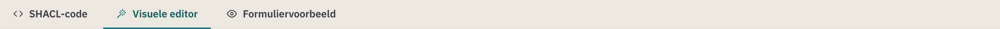
- SHACL-code — het geserialiseerde schema. Standaard Turtle, met autoaanvullen; bewerkingen worden teruggesynchroniseerd naar het visuele canvas. Een syntaxis-keuzemenu biedt daarnaast N-Triples, TriG, Notation3 en een JSON-LD-export. Hier worden ook de bestanden getoond die je opent.
- Visuele editor — de werkbank voor slepen en neerzetten (hierboven getoond). Hier vindt het meeste werk plaats.
- Formuliervoorbeeld — een realistische weergave van het invoerformulier dat je schema oplevert, zodat je de ervaring kunt testen voordat je publiceert.
De Visuele editor is verdeeld in drie kolommen:
| Kolom | Doel |
|---|---|
| Widgets (links) | Het palet met formulierelementen. Sleep er een naar het canvas, of klik er gewoon op (toetsenbord: focus + Enter) om hem toe te voegen. |
| Formuliercanvas (midden) | Je schema: de doelbanner, groepen, eigenschappen en geneste vormen. |
| Inspector (rechts) | Instellingen voor wat op dat moment geselecteerd is — het schema, een groep of een eigenschap. |
Onder de werkbank staat een actiebalk met een teller voor eigenschappen/groepen, een Problemen-indicator (een live controle van je schema — zie §5) en knoppen voor Opslaan / Kopiëren. Om het geserialiseerde schema te zien, ga je naar het tabblad SHACL-code; om het weergegeven formulier te zien, ga je naar Formuliervoorbeeld.
De koptekst bevat de bestandsacties — Ongedaan maken / Opnieuw, Nieuw, Recent, Voorbeelden, Openen, Opslaan, Opslaan als — plus de taalschakelaar en een Gids-koppeling:
Je werk wordt onderweg opgeslagen. Contour bewaart automatisch een concept in je browser, zodat een herlaadbeurt of een per ongeluk gesloten tabblad niets verloren laat gaan — bij terugkomst zie je de melding "Je niet-opgeslagen concept is hersteld". Ongedaan maken/Opnieuw (of Ctrl/Cmd+Z en Ctrl/Cmd+Shift+Z) lopen door je bewerkingen, en het menu Recent opent schema's die je hebt opgeslagen opnieuw.
Taal van de interface
De interface van Contour is beschikbaar in het Engels (standaard), Braziliaans-Portugees, Nederlands, Duits, Spaans en Frans. Schakel met de taalknop (EN / PT / NL / DE / ES / FR) in de koptekst — je keuze wordt onthouden tussen sessies. Als de voorkeurstaal van je browser een van deze talen is, opent Contour daar automatisch in; anders valt het terug op het Engels. Alleen de interface wordt vertaald; de inhoud van je schema (namen, beschrijvingen, eigenschapspaden) en de gegenereerde SHACL worden nooit gewijzigd, dus de geëxporteerde Turtle is in elke taal identiek.
3. Tutorial: bouw een Dataset-schema vanaf nul
We bouwen een metadataschema voor een Dataset in DCAT-stijl. Elke stap introduceert één functie van het gereedschap, en aan het eind heb je elke belangrijke mogelijkheid gebruikt.
Contour begint leeg zodat je je eigen schema vanaf nul kunt bouwen — de paginatitel luidt Nieuw metadataschema totdat je het een naam geeft. Wil je liever een voltooid schema verkennen, dan laadt het menu Voorbeelden in de koptekst kant-en-klare sjablonen (Dataset, Agent, Concept); het voorbeeld Dataset komt overeen met wat we hieronder bouwen:
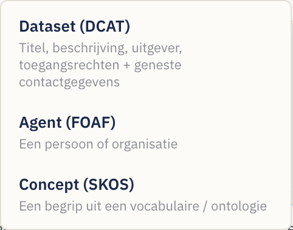
Ga gedurende de hele tutorial naar het tabblad Visuele editor om te werken. Gebruik de knop Nieuw om op elk moment een vers schema te beginnen.
Stap 1 — Bepaal de identiteit van het schema
Klik op de schemabanner boven aan het canvas (deze leest Naamloos schema totdat je het een naam geeft), of op de knop Schema-instellingen. De Inspector schakelt over naar instellingen op schemaniveau:
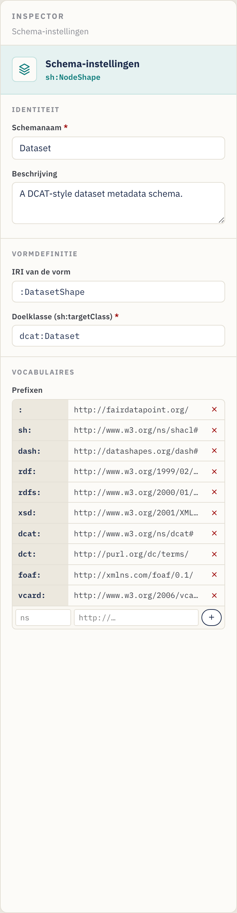
Vul in:
- Schemanaam — een leesbaar label, bijv.
Dataset. (Zodra dit is ingesteld, verandert de paginatitel van Nieuw metadataschema in Dataset bewerken; geef het een naam voor elk domein — een ontologieklasse, een catalogus — en de titel volgt.) - Beschrijving — een zin die het doel van het schema beschrijft.
- Vorm-IRI — de identificator van de vorm, bijv.
:DatasetShape. De voorloop-:gebruikt je standaard-namespace; je kunt de voorgestelde waarde laten staan. - Doelklasse (
sh:targetClass) — de RDF-klasse die dit schema valideert, bijv.dcat:Dataset. Dit is verplicht om het schema bruikbaar te maken — het is wat een platform vertelt "pas deze regels toe op Dataset-records".
Stap 2 — Beheer vocabulaires (prefixes)
Scroll, nog steeds in de schema-instellingen, naar Vocabulaires. Met prefixes
kun je korte termen als dct:title schrijven in plaats van volledige URL's.
De editor wordt geleverd met de gangbare prefixes al gedeclareerd — sh, dash,
rdf, rdfs, xsd, dcat, dct, foaf en de standaard lege prefix :. Om er
zelf een toe te voegen (bijvoorbeeld een domeinvocabulaire):
- Typ in de lege rij onderaan de prefixtabel de alias (bijv.
vcard) in het eerste vakje. - Typ de namespace-URL (bijv.
http://www.w3.org/2006/vcard/ns#) in het tweede vakje. - Druk op Enter of klik op de knop +.
Verwijder een prefix met de × ernaast. Elke prefix die je in een eigenschapspad of klasse gebruikt, moet hier worden gedeclareerd, zodat de geëxporteerde Turtle geldig is.
Stap 3 — Organiseer het formulier in groepen
Groepen (sh:PropertyGroup) zijn de secties van je formulier. Op een leeg canvas
kun je gewoon je eerste widget naar het canvas slepen en maakt Contour de
eerste groep voor je — of klik op Groep toevoegen (rechtsboven op het canvas)
om een lege sectie te maken om in te neer te zetten:
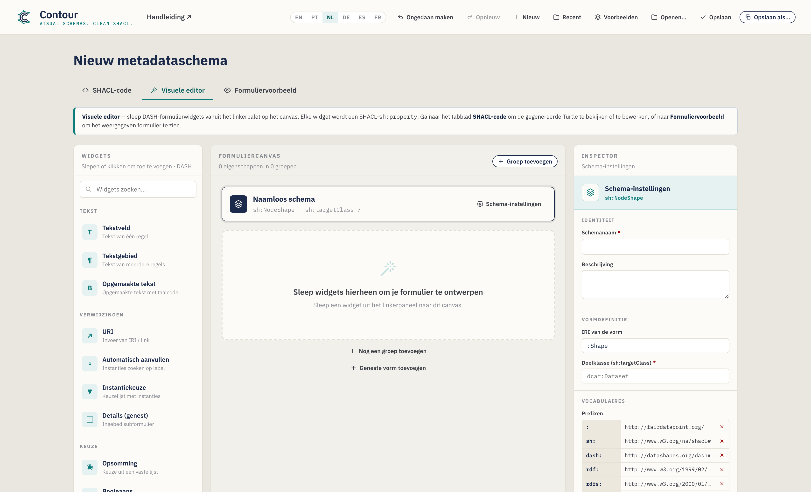
- Hernoem een groep door op de titel te klikken en te typen — bijv.
Algemene informatie. - Herorden met de knoppen ↑ / ↓ op de groepskop (dit hernummert de groepen voor je).
- Verwijder met het prullenbakpictogram op de groepskop.
Maak voor deze tutorial twee groepen: General information en Provenance.
Stap 4 — Voeg je eerste eigenschap toe (een tekstveld)
Voeg vanuit het Widgets-palet aan de linkerkant een Tekstveld toe aan de groep General information — sleep het op de groep, of klik er gewoon op (het wordt toegevoegd aan de geselecteerde groep, of aan de laatste). Toetsenbordgebruikers kunnen een widget focussen en op Enter drukken. De widgets zijn geordend op categorie (Tekst, Verwijzingen, Keuze, Datum en getal) en doorzoekbaar via het vak bovenaan.
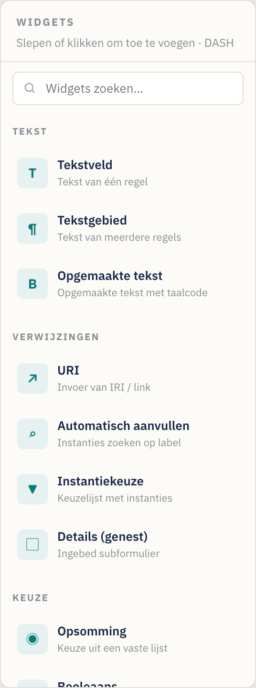
Wanneer je een widget toevoegt, wordt het een eigenschapkaart op het canvas en wordt het automatisch geselecteerd. Een eigenschapkaart toont zijn label, pad, type en statusbadges (een rode stip voor verplicht, een "multi"-badge voor herhaalbaar):

Elke kaart heeft handvatten om te slepen en herordenen (de greep links), te dupliceren en te verwijderen (de pictogrammen rechts, bij aanwijzen).
Met het nieuwe veld geselecteerd toont de Inspector de Eigenschapsinstellingen ervan. Stel in:
- Label (
sh:name) →Title— het veldlabel dat aan gebruikers wordt getoond. - Beschrijving → optionele helptekst (verschijnt als een ⓘ-tooltip op het formulier).
- Eigenschapspad (
sh:path) →dct:title— de RDF-term waarin dit veld schrijft. Stel dit altijd in; het standaard tijdelijke pad is niet betekenisvol. Terwijl je typt, stelt Contour gangbare predicaten voor (en je gedeclareerde prefixes); kies er een of typ je eigen verder.
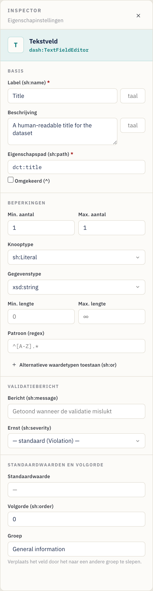
Stap 5 — Stel cardinaliteit en validatiebeperkingen in
De sectie Beperkingen van de Inspector regelt de validatie. Voor Title:
- Min. aantal =
1, Max. aantal =1→ precies één titel is verplicht. (Min. aantal ≥ 1 maakt het veld verplicht — let op de rode stip op de kaart en het rode sterretje in het formuliervoorbeeld.) - Node kind =
sh:Literal(een gewone waarde in plaats van een koppeling). - Datatype =
xsd:string. - Optioneel Min./Max. lengte en een Patroon (een reguliere expressie,
bijv.
^[A-Z].*om een beginhoofdletter te vereisen).
Spiekbriefje cardinaliteit: Min 1 / Max 1 = verplicht, enkele waarde. Min 0 / Max 1 = optioneel, enkele waarde. Min 1 / Max ∞ (laat Max leeg) = verplicht, herhaalbaar. Min 0 / Max ∞ = optioneel, herhaalbaar.
Waardebereik (getallen en datums). Velden van het type Getal, Datum en Datum en
tijd tonen een sectie Waardebereik — stel Min (≥) / Max (≤) (inclusief)
of de exclusieve grenzen (>) / (<) in. Getallen worden kaal geschreven
(sh:minInclusive 1900), datums als getypeerde literalen
("2020-01-01"^^xsd:date).
Aangepast validatiebericht (optioneel). Met de sectie Validatiebericht stel
je de tekst in die een platform toont wanneer dit veld faalt (sh:message) en de
Ernst ervan — Violation (standaard), Warning of Info (sh:severity).
Stap 6 — Voeg een meerregelige beschrijving toe
Sleep een Tekstgebied naar General information. Stel in:
- Label →
Description, Pad →dct:description. - Min. aantal =
1, laat Max. aantal leeg (∞), zodat er meerdere taalvarianten kunnen worden aangeleverd. De kaart toont nu een multi-badge, en het formuliervoorbeeld krijgt een knop + Toevoegen.
Stap 7 — Voeg een datum-eigenschap toe
Sleep een Datumkiezer naar General information. Stel in:
- Label →
Issued, Pad →dct:issued. - Min. aantal =
0, Max. aantal =1(optioneel, enkel). - Het datatype staat standaard op
xsd:date, wat correct is voor een kalenderdatum. (Gebruik in plaats daarvan Datum en tijd als je een tijdstempel nodig hebt —xsd:dateTime.)
Stap 8 — Voeg een gecontroleerd vocabulaire toe (enumeratie)
Schakel over naar de groep Provenance en sleep er een Enumeratie-widget in.
Dit maakt een vervolgkeuzelijst die beperkt is tot een vaste lijst met waarden
(sh:in).
In de Inspector verschijnt een editor voor Toegestane waarden:
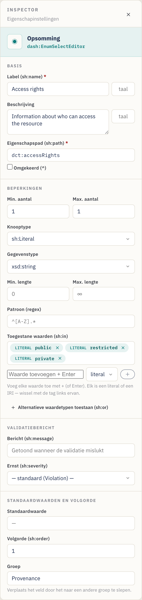
- Label →
Access rights, Pad →dct:accessRights. - Typ in Toegestane waarden elke optie en druk op Enter:
public,restricted,private. Verwijder er een met de bijbehorende ×. - Min./Max. aantal
1/1om precies één keuze te vereisen.
De waarden worden geëxporteerd als sh:in ( "public" "restricted" "private" ).
Literale waarden versus IRI-waarden. Elke toegestane waarde heeft een literal / IRI-schakelaar (het kleine label links ervan). Houd hem op literal voor gewone tekst zoals
public; zet hem op IRI wanneer de keuzes termen uit een gecontroleerd vocabulaire zijn (bijv.ex:Public, eenskos:Concept), zodat ze als IRI's worden geëxporteerd in plaats van als strings.
Stap 9 — Verwijs naar een andere entiteit (IRI + klasse)
Sommige eigenschappen verwijzen naar een andere bron in plaats van een gewone waarde te bevatten — de uitgever van de dataset is bijvoorbeeld een organisatie, geen string. Sleep een Autoaanvullen-widget naar Provenance. Dit geeft een zoekvak weer dat bestaande instanties opzoekt.
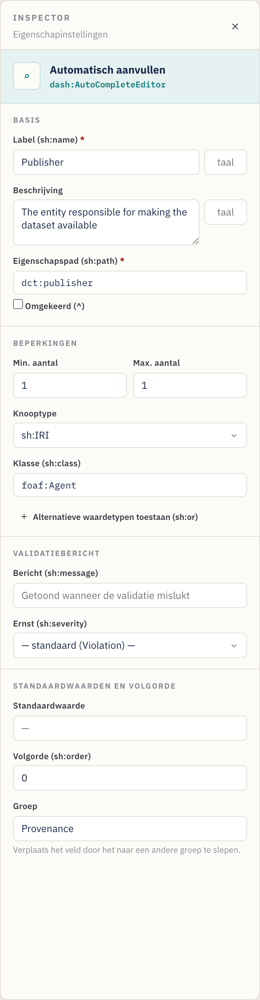
- Label →
Publisher, Pad →dct:publisher. - Node kind =
sh:IRI(de waarde is een koppeling/identificator). - Klasse (
sh:class) →foaf:Agent— beperkt de kiezer tot instanties van die klasse. (Het vak Klasse verschijnt alleen wanneer de node kind op IRI is gebaseerd.) - Min./Max. aantal
1/1.
Andere verwijzingswidgets: URI (vrije koppeling), Instanties selecteren (een vervolgkeuzelijst van instanties). Gebruik wat het beste past bij hoe de waarde wordt gekozen. Het vak Klasse stelt gangbare klassen voor terwijl je typt.
Geavanceerd: een eigenschap kan ook ofwel een literal of een IRI accepteren (en vergelijkbare "een van deze types"-regels) via Alternatieve waardetypes (
sh:or), of een relatie achterstevoren volgen met een Inverse (^)-pad — zie §6 Geavanceerde functies.
Stap 10 — Modelleer een subobject met een geneste vorm
Soms is een veld zelf een klein gestructureerd object. Een contactpunt heeft bijvoorbeeld een eigen naam en e-mailadres. Modelleer dit met een geneste vorm en de widget Details (genest).
- Klik onder aan het canvas op Geneste vorm toevoegen. Er verschijnt een
nieuwe vorm onder de scheidingslijn Geneste vormen die wordt geselecteerd.
Stel in de Inspector de Vorm-IRI ervan in (bijv.
:ContactShape) en eventueel een Doelklasse (bijv.vcard:Kind). Het hernoemen van de IRI werkt automatisch elke eigenschap bij die ernaar verwijst. - Sleep widgets op de geneste vorm net als bij een groep — bijv. een
Tekstveld
Full name(vcard:fn) en een URIEmail(vcard:hasEmail). - Voeg, terug in een groep, een widget Details (genest) toe. Stel in de
bijbehorende Inspector Geneste vorm (
sh:node) in op:ContactShape(het vak biedt je geneste vormen als suggesties aan).
Sneltoets. Op een Details-eigenschap kun je klikken op Geneste vorm maken en koppelen om in één stap een nieuwe vorm te creëren en
sh:nodeeraan te koppelen — voeg er vervolgens gewoon de velden aan toe. De eigenschapkaart toont de koppeling waarnaar hij verwijst (bijv.→ :ContactShape), en het paneel Problemen markeert een Details-eigenschap waarvan het doel ontbreekt.
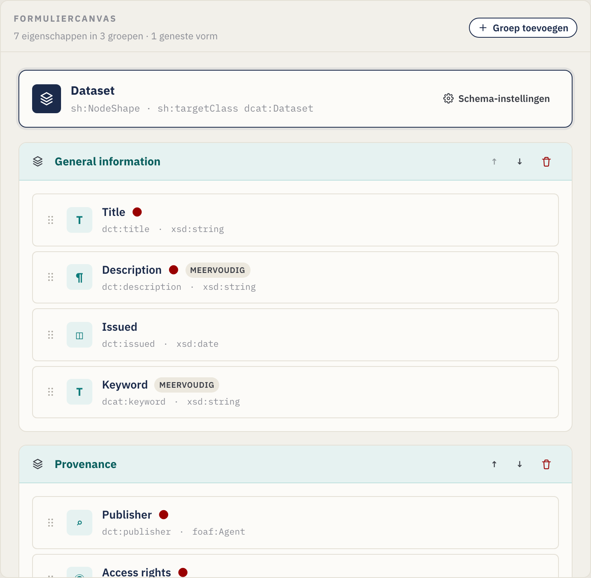
De Inspector van de Details-eigenschap koppelt deze via sh:node aan de geneste
vorm:
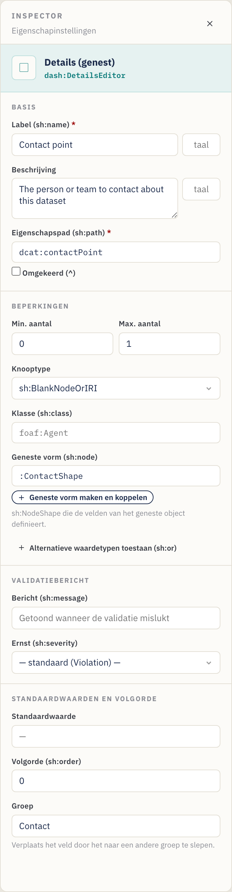
De kaart van de geneste vorm op het canvas bevat zijn eigen eigenschappen:

Stap 11 — Bekijk een voorbeeld van het invoerformulier
Open op elk moment het tabblad Formuliervoorbeeld om te controleren wat degene
die de metadata invoert te zien krijgt. Het voorbeeld weerspiegelt je beperkingen:
verplichte velden tonen een rood sterretje, een kleine cardinaliteit-chip toont
het toegestane aantal (bijv. 1–3), beschrijvingen worden ⓘ-tooltips, herhaalbare
velden krijgen + Toevoegen-knoppen, patronen / lengtes / bereiken worden op de
invoervelden toegepast, taalgemarkeerde tekst krijgt een klein taalvak, een
eventueel validatiebericht verschijnt onder het veld, en
Details-eigenschappen geven de velden van hun geneste vorm inline weer — tot
elke gewenste diepte genest:
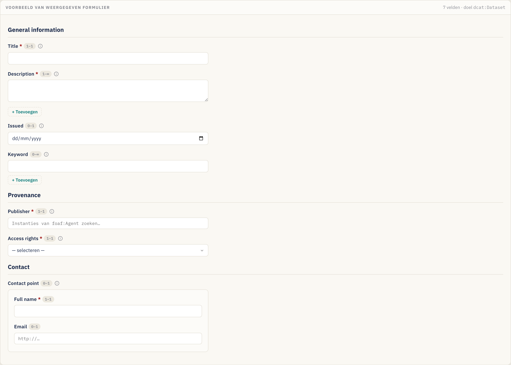
Dit voorbeeld is alleen-lezen — het is er om het ontwerp te valideren, niet om echte gegevens vast te leggen.
Stap 12 — Bekijk de gegenereerde SHACL
Het tabblad SHACL-code toont de Turtle die uit je ontwerp wordt gegenereerd (en laat je deze rechtstreeks bewerken):
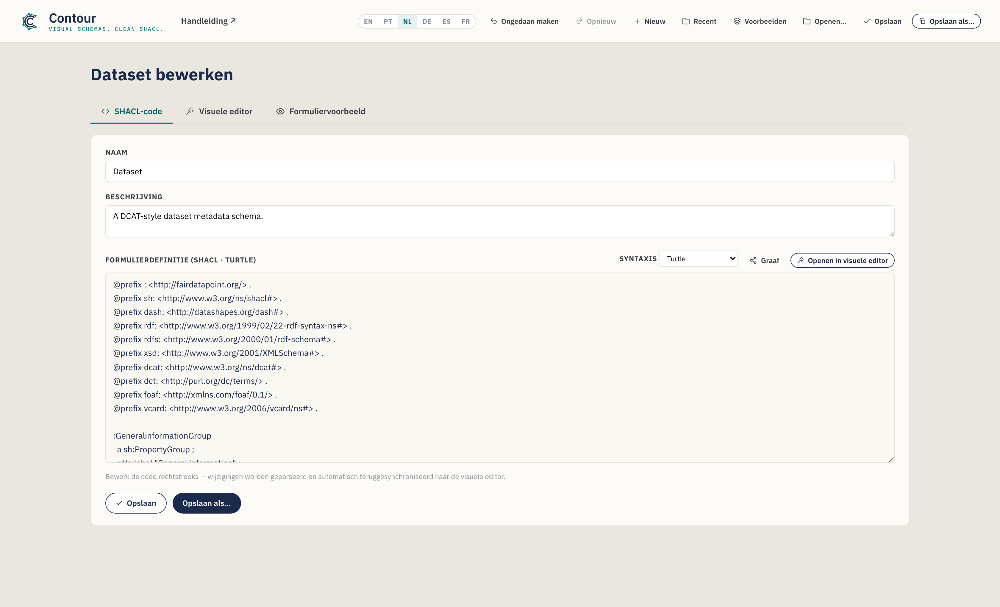
Alles wat je visueel hebt geconfigureerd staat hier — @prefix-declaraties, de
PropertyGroups, de NodeShape met zijn sh:property-blokken en eventuele
geneste vormen. De knop SHACL kopiëren in de actiebalk van de Visuele editor
zet de serialisatie op je klembord. Gebruik het keuzemenu Syntaxis om andere
formaten te bekijken of te exporteren, waaronder JSON-LD (zie
§4).
Stap 13 — Opslaan en exporteren
Sla je schema op (standaard een .ttl-bestand):
- Opslaan als… — kies een nieuwe bestandsnaam en locatie. De extensie volgt de
geselecteerde syntaxis (
.ttl,.nt,.trig,.n3of.jsonld). - Opslaan — schrijf terug naar het bestand dat je het laatst hebt geopend/opgeslagen (Ctrl/Cmd+S). De knop toont kort Opgeslagen! ter bevestiging.
- SHACL kopiëren — kopieer de huidige serialisatie zonder een bestand op te slaan.
- Recent (koptekst) — open een schema opnieuw dat je eerder in deze sessie hebt opgeslagen.
In Chrome/Edge wordt het bestand rechtstreeks naar schijf geschreven. In Firefox/Safari valt de editor terug op een normale download. De voorgestelde bestandsnaam wordt afgeleid van de schemanaam (bijv.
dataset.ttl). Hoe dan ook wordt er tussen sessies een automatisch opgeslagen concept in je browser bewaard.
Upload de resulterende .ttl naar je FAIR Data Point (of een ander SHACL-platform)
als metadataschema, en records van de doelklasse worden gevalideerd — en
formulieren weergegeven — volgens jouw ontwerp.
4. Rechtstreeks met de code werken (het tabblad SHACL-code)
Schrijf of plak je SHACL liever met de hand, of moet je vanuit een bestaande vorm beginnen? Gebruik het tabblad SHACL-code.
- Tweerichtingssynchronisatie. Bewerkingen aan de Turtle worden geparseerd en automatisch teruggestuurd naar de Visuele editor (nadat je even stopt met typen). Omgekeerd verschijnt alles wat je visueel bouwt hier.
- Contextbewust autoaanvullen (Turtle). Terwijl je typt, stelt de editor
SHACL-predicaten, node kinds, XSD-datatypes, DASH-editors, gedeclareerde
eigenschapsgroepen en
@prefix-regels voor. Gebruik ↑/↓ om te verplaatsen, Tab/Enter om te accepteren, Esc om te sluiten.
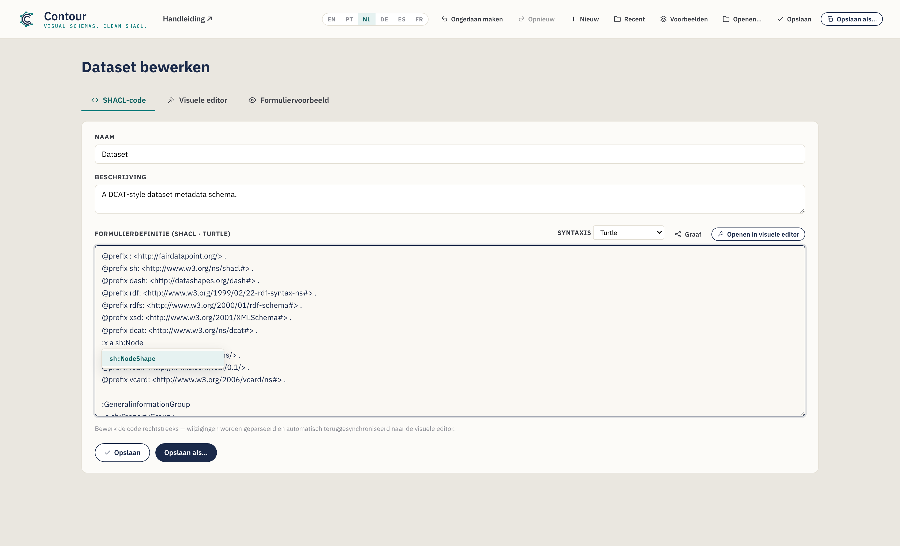
- Een bestaand bestand openen. Openen… in de koptekst laadt een
.ttl/.nt/.trig/.n3-bestand in dit tabblad, detecteert de syntaxis en parseert het in de Visuele editor — een snelle manier om een bestaand schema aan te passen. Als een bestand niet kan worden geparseerd, wijst een inline-melding naar de probleemregel; je kunt de ruwe tekst nog altijd bewerken. - Naam en Beschrijving voor het schema hebben ook eenvoudige invoervelden boven aan dit tabblad.
Klik op Openen in Visuele editor om terug te springen naar de slepen-en-neerzetten-weergave.
Een syntaxis kiezen (en JSON-LD exporteren)
Een keuzemenu Syntaxis in dit tabblad schakelt de serialisatie tussen
Turtle (standaard), N-Triples, TriG, Notation3 en JSON-LD
(export). De eerste vier zijn volledig bewerkbaar — bewerkingen synchroniseren
terug. JSON-LD is alleen voor export (er is geen JSON-LD-parser): de editor
toont het alleen-lezen, zodat je het kunt kopiëren of als .jsonld-bestand kunt
opslaan als, en daarna terug kunt schakelen naar Turtle om verder te bewerken.
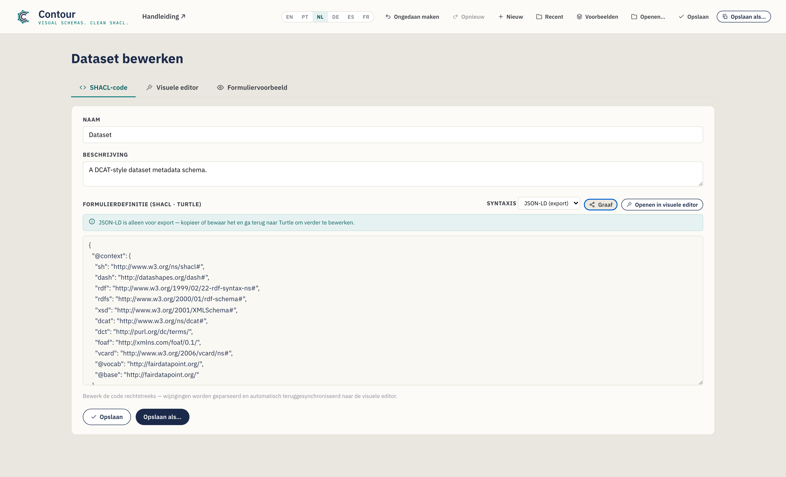
Nieuwe schema's beginnen altijd als Turtle, en Opslaan als gebruikt de extensie die bij de geselecteerde syntaxis past.
Een bestaand schema bewerken gebeurt zonder verlies
Contour parseert bestanden met een echte RDF-engine, dus het openen, bewerken en
opslaan van een schema laat nooit stilletjes de onderdelen vallen die het niet
visueel modelleert. Constructies waarvoor de editor geen besturingselement heeft
— bijvoorbeeld sh:and, qualified value shapes of extra annotaties — worden
woordelijk bewaard en opnieuw uitgevoerd in een duidelijk becommentarieerd
"Preserved"-blok aan het einde van de uitvoer. Wanneer een geladen bestand zulke
constructies bevat, zie je een korte melding in dit tabblad; je bewerkingen aan de
onderdelen die Contour wel modelleert worden zoals gebruikelijk toegepast, en de
rest blijft bij een round-trip intact.
De graaf visualiseren
Klik op Graaf in dit tabblad om in een overlay een knoop-link-visualisatie van
het RDF van het schema te openen — vormen, eigenschapsknopen, klassen en literalen,
verbonden door hun predicaten. Scroll om te zoomen, sleep de achtergrond om te
pannen en sleep een knoop om hem te verplaatsen. Twee schakelaars temmen het detail
(beide standaard aan): Lijsten inklappen vouwt een sh:in/sh:or-lijst samen
tot één chip, en Annotaties verbergen laat labels en formulierhints (sh:name,
dash:editor, sh:order, …) weg, zodat de structuur eruit springt. Het is een
snelle manier om de vormgraaf (en eventuele geneste vormen of bewaarde constructies)
in één oogopslag te zien.
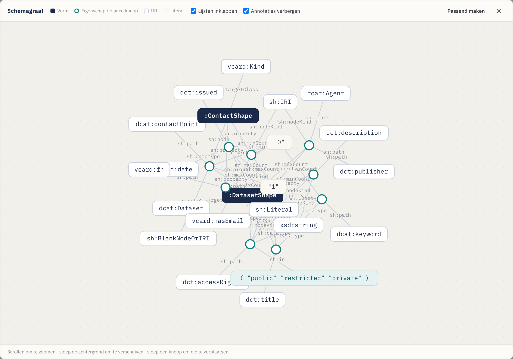
5. Je werk controleren (het paneel Problemen)
Terwijl je bouwt, controleert Contour het schema voortdurend en vat het problemen samen in de Problemen-indicator op de actiebalk van de Visuele editor. Klik erop om de lijst uit te klappen; klik op een item om direct naar het betreffende element te springen.

Het markeert zaken zoals:
- een eigenschap zonder pad, of dubbele paden in dezelfde groep;
- een Details-eigenschap waarvan de geneste vorm ontbreekt;
- een pad, klasse, datatype of doelklasse die een prefix gebruikt die je niet hebt gedeclareerd;
- een ontbrekende doelklasse of schema-naam;
- geneste vormen met een ontbrekende of dubbele IRI.
Problemen zijn niet-blokkerend — het is begeleiding, geen poortwachter — maar ze oplossen betekent dat de geëxporteerde SHACL welgevormd is en alleen verwijst naar gedeclareerde vocabulaires.
6. Geavanceerde functies (geavanceerd modelleren)
Naast de kernwidgets en -beperkingen biedt de Inspector een paar geavanceerde besturingselementen voor rijkere schema's. Elk is optioneel — grijp ernaar wanneer je model het nodig heeft.
Labels in meerdere talen
sh:name en sh:description kunnen een taalmarkering dragen, en je kunt
vertalingen toevoegen zodat één veld in meerdere talen wordt gelabeld. Typ in
de sectie Basis een markering (bijv. en) in het kleine vak naast het label;
een editor voor vertalingen laat je er vervolgens meer toevoegen (pt →
"Título", …). Elk wordt een eigen taalgemarkeerde uitspraak (sh:name "Title"@en, "Título"@pt), en het formuliervoorbeeld toont een taalvak op het veld.
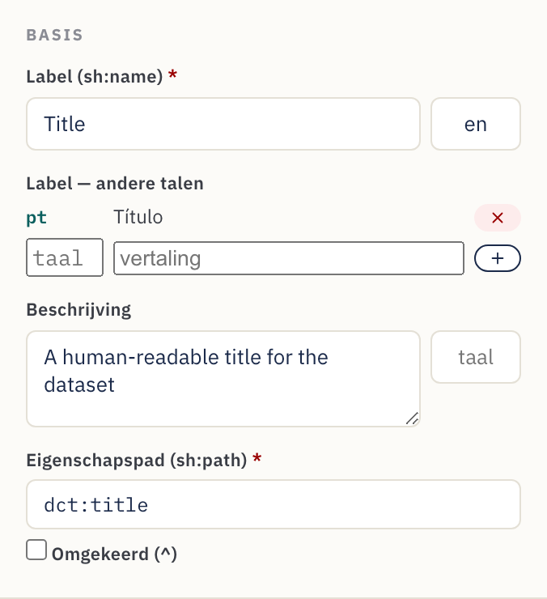
Numerieke en datumbereiken
Velden van het type Getal, Datum en Datum en tijd tonen een blok Waardebereik
onder Beperkingen. Stel inclusieve Min (≥) / Max (≤) of exclusieve
(>) / (<)-grenzen in — bijv. een publicatiejaar ≥ 1900. Getallen worden
kaal geëxporteerd (sh:minInclusive 1900); datums als getypeerde literalen
("2000-01-01"^^xsd:date).
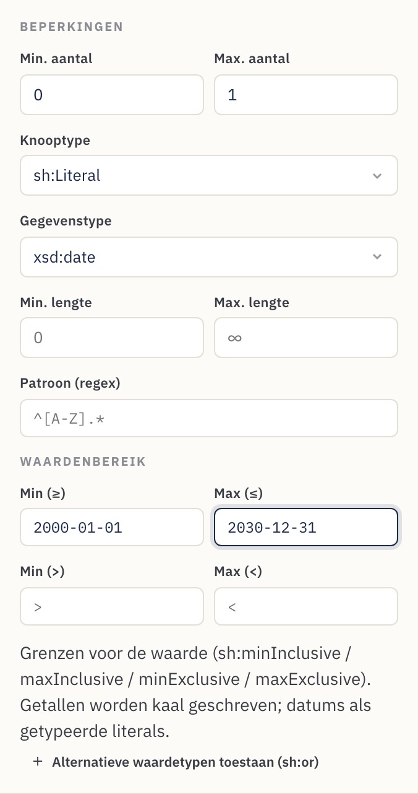
Aangepaste validatieberichten
De sectie Validatiebericht stelt de tekst in die een platform toont wanneer een
waarde de regel niet doorstaat (sh:message) en de Ernst ervan — Violation
(standaard), Warning of Info (sh:severity). Gebruik het om een kale fout om te
zetten in begeleiding die de steward begrijpt.
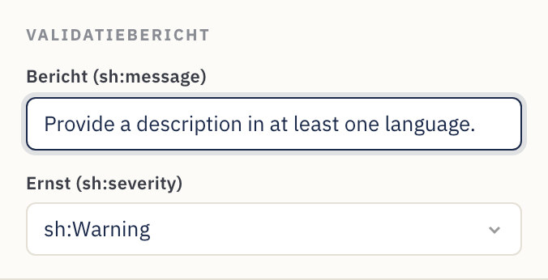
Alternatieve waardetypes (literal of IRI)
Sommige eigenschappen accepteren terecht meer dan één soort waarde — een onderwerp
dat vrije tekst of een IRI uit een gecontroleerd vocabulaire mag zijn, bijvoorbeeld.
Klik op Alternatieve waardetypes toestaan (sh:or) en som de takken op (elk een
node kind, datatype of klasse). Het wordt geëxporteerd als sh:or ( [ … ] [ … ] ).
Rijkere logische vormen die Contour niet modelleert blijven bij een round-trip
bewaard (zie §4).
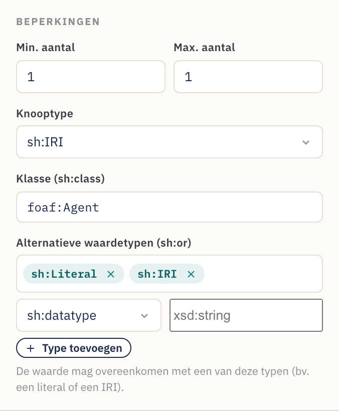
Inverse paden
Vink Inverse (^) aan naast het eigenschapspad om een relatie achterstevoren
te matchen — "bronnen die naar deze verwijzen" in plaats van andersom. Het wordt
geëxporteerd als sh:path [ sh:inversePath … ], en de eigenschapkaart toont het pad
met een voorloop-^.
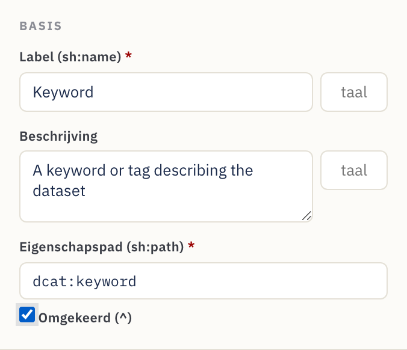
7. Referentie
Widgetcatalogus
Elke widget verwijst naar een DASH-editor en een verstandige standaard node kind / datatype.
| Widget | DASH-editor | Typisch gebruik | Standaardwaarden |
|---|---|---|---|
| Tekstveld | dash:TextFieldEditor |
Tekst van één regel | sh:Literal, xsd:string |
| Tekstgebied | dash:TextAreaEditor |
Meerregelige tekst | sh:Literal, xsd:string |
| Rijke tekst | dash:RichTextEditor |
Opgemaakte tekst met taalmarkering | sh:Literal, rdf:HTML |
| URI | dash:URIEditor |
Vrije koppeling / IRI | sh:IRI |
| Autoaanvullen | dash:AutoCompleteEditor |
Een instantie opzoeken op label | sh:IRI, sh:class foaf:Agent |
| Instanties selecteren | dash:InstancesSelectEditor |
Vervolgkeuzelijst van instanties | sh:IRI |
| Details (genest) | dash:DetailsEditor |
Ingebed subformulier via een geneste vorm | sh:BlankNodeOrIRI |
| Enumeratie | dash:EnumSelectEditor |
Keuze uit een vaste sh:in-lijst |
sh:Literal, xsd:string |
| Booleaans | dash:BooleanSelectEditor |
waar / onwaar | sh:Literal, xsd:boolean |
| Datumkiezer | dash:DatePickerEditor |
Kalenderdatum | sh:Literal, xsd:date |
| Datum en tijd | dash:DateTimePickerEditor |
Tijdstempel | sh:Literal, xsd:dateTime |
| Getal | dash:NumberFieldEditor |
Numerieke waarde | sh:Literal, xsd:integer |
Standaardwaarden zijn vertrekpunten — overschrijf de node kind, het datatype of de klasse in de Inspector wanneer je model iets anders nodig heeft.
Referentie van eigenschapsinstellingen
Wat elk besturingselement van de Inspector in SHACL schrijft:
| Inspector-veld | SHACL-uitvoer | Opmerkingen |
|---|---|---|
| Label | sh:name |
Het formulierlabel. Een optionele taalmarkering + aanvullende vertalingen geven één sh:name per taal. |
| Beschrijving | sh:description |
Helptekst / ⓘ-tooltip. Ook van een taalmarkering te voorzien, met vertalingen. |
| Eigenschapspad | sh:path |
Verplicht. Het RDF-predicaat. Inverse (^) geeft [ sh:inversePath … ]. |
| Min. aantal | sh:minCount |
≥ 1 maakt het veld verplicht. |
| Max. aantal | sh:maxCount |
Leeg = onbegrensd (herhaalbaar). |
| Node kind | sh:nodeKind |
sh:Literal, sh:IRI, sh:BlankNode of combinaties. |
| Datatype | sh:datatype |
Getoond voor literale node kinds. |
| Klasse | sh:class |
Getoond voor IRI-node kinds; beperkt het doeltype. |
| Geneste vorm | sh:node |
Getoond voor Details; koppelt aan een geneste vorm. |
| Min. / Max. lengte | sh:minLength / sh:maxLength |
Alleen literalen. |
| Waardebereik | sh:minInclusive / maxInclusive / minExclusive / maxExclusive |
Getallen en datums. |
| Patroon (regex) | sh:pattern |
Alleen literalen. |
| Toegestane waarden | sh:in ( … ) |
Enumeratiekeuzes; elke waarde literal of IRI. |
| Alternatieve waardetypes | sh:or ( … ) |
"Accepteer een van deze types" (bijv. literal of IRI). |
| Bericht / Ernst | sh:message / sh:severity |
Aangepaste validatietekst + Violation / Warning / Info. |
| Standaardwaarde | sh:defaultValue |
Vooraf ingevulde waarde. |
| Volgorde | sh:order |
Veldvolgorde binnen de groep. |
Besturingselementen op schema- en groepsniveau:
| Besturingselement | SHACL-uitvoer |
|---|---|
| Schemanaam | rdfs:label op de NodeShape |
| Vorm-IRI | het subject van de NodeShape |
| Doelklasse | sh:targetClass |
| Prefixes | @prefix-declaraties |
| Groepslabel | rdfs:label op de sh:PropertyGroup |
| Groepsvolgorde | sh:order op de groep; de sh:group van het veld koppelt het |
8. Recepten — veelvoorkomende modelleerpatronen
Korte, op zichzelf staande patronen die je boven op de tutorial kunt toepassen.
Een veld verplicht maken. Stel Min. aantal in op 1. De kaart toont een
rode stip en het formulier markeert het met *.
Meerdere waarden toestaan. Laat Max. aantal leeg (∞). De kaart toont een multi-badge en het formulier krijgt + Toevoegen.
Beperken tot een vaste lijst. Gebruik de Enumeratie-widget en vul
Toegestane waarden in. Exporteert als sh:in.
Koppelen aan een organisatie of persoon. Gebruik Autoaanvullen (of
Instanties selecteren), node kind sh:IRI en Klasse = foaf:Agent (of de
klasse die je kiest).
Een gestructureerd subobject vastleggen (adres, contactpunt, distributie). Maak
een geneste vorm, voeg de velden ervan toe en wijs er vervolgens een Details
(genest)-eigenschap naar via sh:node. Zie
Stap 10.
Een formaat afdwingen. Stel voor literalen een Patroon (regex) en/of Min./Max. lengte in — bijv. een ORCID-patroon, of een maximumlengte op een codeveld.
Een getal of datum begrenzen. Gebruik op een Getal-/Datum-veld de sectie
Waardebereik — bijv. Min (≥) 1900 voor een jaar, of Max (≤) een
afsluitdatum.
Een label in meerdere talen aanbieden. Stel een taalmarkering in op het
Label (bijv. en) en voeg vertalingen toe (pt → "Título", …). Elk wordt
een taalgemarkeerde sh:name, en het formuliervoorbeeld toont een taalvak.
Een literal of een IRI accepteren (of "een van deze types"). Gebruik
Alternatieve waardetypes (sh:or) op de eigenschap en som de takken op (bijv.
sh:nodeKind sh:Literal en sh:nodeKind sh:IRI). Gangbaar in DCAT-AP voor waarden
die inline tekst of een verwijzing mogen zijn.
Een relatie achterstevoren volgen. Vink Inverse (^) aan op het pad om
"dingen die naar deze bron verwijzen" te matchen (bijv. leden van een collectie) —
geëxporteerd als [ sh:inversePath … ].
Een validatieregel uitleggen. Vul het Validatiebericht met tekst die de steward begrijpt en kies een Ernst zodat een platform een nuttige Warning kan tonen in plaats van een kale fout.
Naar JSON-LD exporteren. Stel in het tabblad SHACL-code Syntaxis in op
JSON-LD (export) en Kopieer of Sla op als .jsonld voor gereedschappen
die JSON-LD verwerken.
Beginnen vanuit een voorbeeld. Gebruik het menu Voorbeelden om een sjabloon Dataset (DCAT), Agent (FOAF) of Concept (SKOS) te laden en pas het vervolgens aan je behoeften aan.
Een bestaand schema hergebruiken. Open… het bestaande bestand, pas het aan in de Visuele editor en gebruik vervolgens Opslaan als… voor een nieuw bestand — alles wat Contour niet modelleert blijft bewaard (zie §4).
9. Tips en probleemoplossing
- Stel altijd het eigenschapspad in. Nieuwe widgets krijgen een tijdelijk pad
als
:textfield; vervang het door de echte RDF-term (dct:title,dcat:theme, …) anders gebruikt de geëxporteerde metadata niet de term die je bedoelt. - Declareer de prefixes die je gebruikt. Als een pad of klasse een alias
gebruikt (bijv.
vcard:), voeg deze dan toe onder Vocabulaires zodat de Turtle geldig is. - Een veld is in de verkeerde groep beland. Sleep de eigenschapkaart naar de juiste groep; het vak Groep in de Inspector is alleen-lezen en weerspiegelt de verplaatsing.
- Bewerkingen in de SHACL-code zijn niet gesynchroniseerd. Synchronisatie gebeurt kort nadat je stopt met typen. Als er een parseerfout wordt getoond (met een regelnummer), corrigeer dan de Turtle — het visuele canvas behoudt de laatste geldige toestand tot de tekst parseert.
- De knop Opslaan downloadt alleen. Dat is de verwachte terugval in Firefox/Safari. Gebruik voor opslaan op de plek zelf een browser op Chromium-basis (Chrome/Edge).
- Een fout gemaakt? Ongedaan maken (Ctrl/Cmd+Z) / Opnieuw (Ctrl/Cmd+Shift+Z) dekken elke bewerking, en je werk wordt automatisch opgeslagen — een herlaadbeurt herstelt het.
- Controleer het paneel Problemen. Klap vóór het exporteren Problemen in de
actiebalk uit en los eventuele fouten op (lege paden, niet-gedeclareerde
prefixes, gebroken
sh:node). - JSON-LD aan het bewerken? Dat kan niet — het is alleen voor export. Schakel Syntaxis terug naar Turtle (of N-Triples / TriG / N3) om verder te bewerken.
- Opnieuw beginnen. Gebruik de knop Nieuw voor een leeg schema, laad er een uit Voorbeelden, of Open… een bestaand bestand.
Gebouwd met Contour voor het FAIR Data Point-ecosysteem. De uitvoer is standaard SHACL + DASH en werkt met elk SHACL-bewust gereedschap.